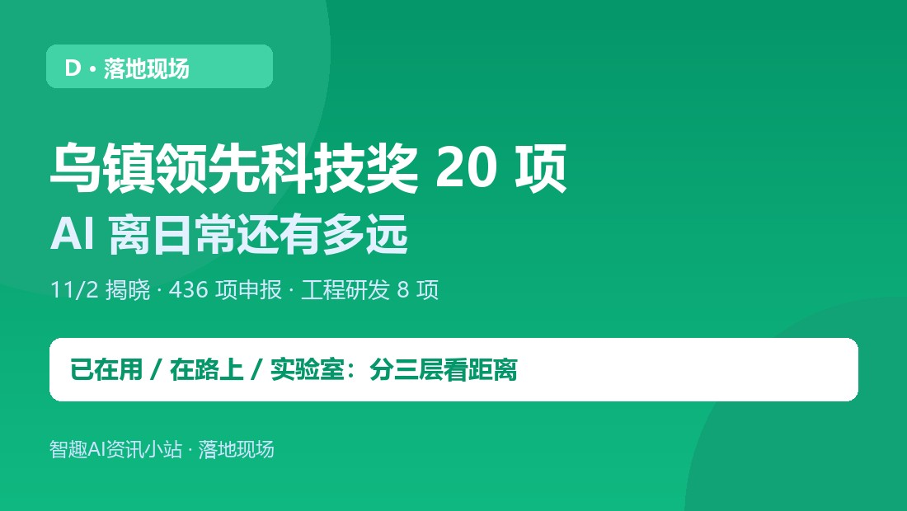
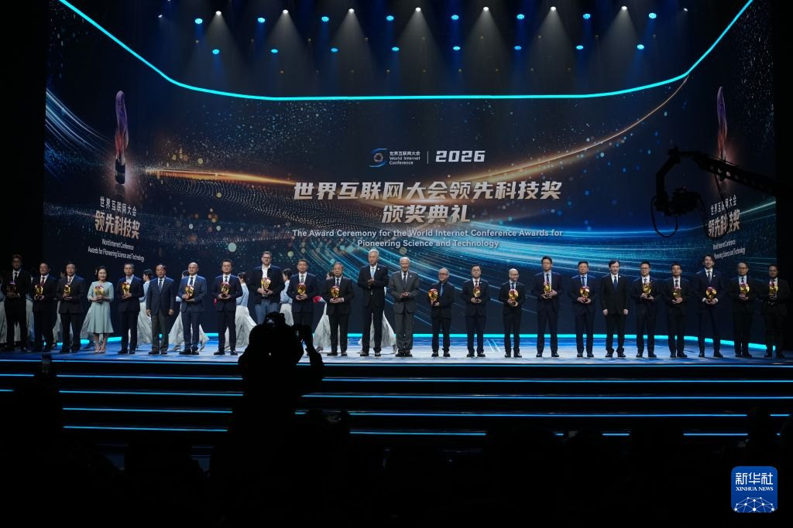
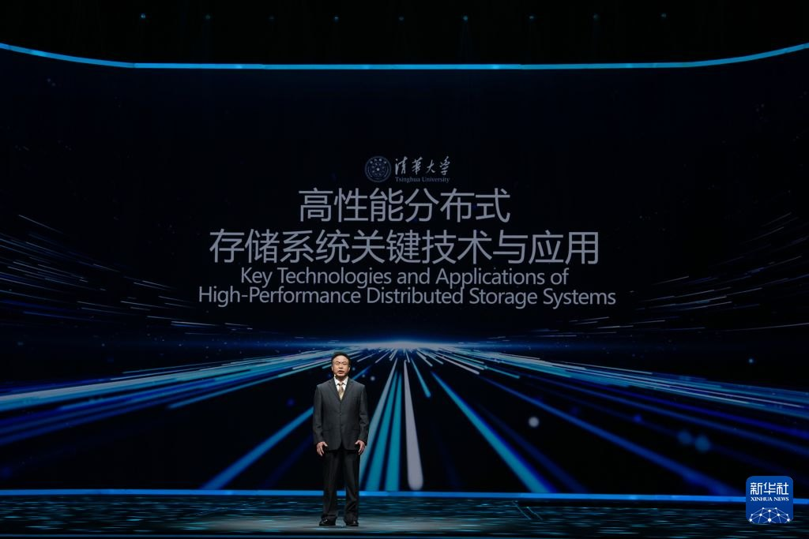
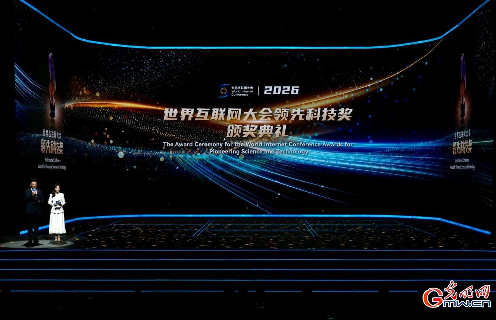

小智
AI 资讯站。只报真事，不制造焦虑。
长按识别二维码 · 关注不迷路
D · 落地现场
43 个国家和地区 436 项申报里选出 20 项，其中离生活最近的四个值得单看。
获奖说明的是工程化做出来了，不等于消费级买得到。

11 月 2 日，2026 年世界互联网大会领先科技奖在乌镇揭晓：来自 43 个国家和地区、436 项有效申报中选出 20 项（基础研究 2、关键技术 10、工程研发 8）。评审委员会主席邬贺铨给出的概括是「智能引领、数实贯通、底座夯实」——人工智能正从模型能力向智能体、具身智能加速演进。

1. 阿里 Qoder（工程研发组）：国内唯一获奖的通用 Agent 产品。它做的事是让智能体理解工程、自主编写工具、循环推进研发任务——也就是「AI 写代码」从补全走向做完整项目。你未必直接用，但你用的软件可能开始由它参与开发。
2. 地平线「面向物理 AI 的整车智能体技术平台」：把汽车当成一个智能体来做，含征程芯片、舱驾融合芯片星空、整车智能体操作系统与辅助驾驶系统。官方给出的数据是征程出货突破 1500 万套，中国每三台智能汽车就有一台搭载——这是已经上路的数量级。
3. 小米「面向规模化落地的通用机器人操作基座模型」：解决机器人「换一个任务就要重训一遍」的问题，方向是让同一套操作能力规模化复用。
4. BrainCo 智能仿生手（浙江强脑科技）：关键词是「规模化助残应用」，不是实验室样机，是已经装到人手上的东西。
- 「九章四号」光量子计算原型机（基础研究组）；
- 昇腾 950 超节点、九源统一智能计算系统、高性能分布式存储（关键技术组）；
- AMD 锐龙 AI Max+ 智能体主机处理器（工程研发组）。
评奖把「算得快、存得稳」和「能干活」放在同一张名单上，本身就是信号：智能体要落地，靠的不只是模型，还有芯片、存储和整机。

距离 例子 你现在能不能碰到
已在用 智能驾驶芯片、AI 编程工具、仿生手 买车 / 装工具 / 辅具适配时直接遇到
在路上 整车智能体、机器人操作基座模型 还需工程化与规模验证
实验室 光量子原型机、统一智算系统 属于基础设施，普通人感受不到
「获奖」说明的是工程化做出来了，不等于「消费级买得到」。把这三层次分清楚，就不会把一条获奖新闻读成「明天就能用」或「跟我没有关系」。
下次看到「某 AI 技术获奖」，先问一句：它属于已在用 / 在路上 / 实验室哪一层？再查有没有出货量、装机体量或可下载入口——有数字的通常在第一层，只有演示视频的多半在第三层。

事实依据
11/2 乌镇举行 2026 年世界互联网大会领先科技奖颁奖典礼，43 个国家和地区 436 项有效申报，选出 20 项（基础研究 2、关键技术 10、工程研发 8），评审委员会主席邬贺铨概括为「智能引领、数实贯通、底座夯实」。获奖含阿里 Qoder（国内唯一通用 Agent 产品）、地平线「面向物理 AI 的整车智能体技术平台」（征程出货超 1500 万套）、小米通用机器人操作基座模型、BrainCo 智能仿生手、九章四号、昇腾 950 超节点、九源统一智能计算系统、高性能分布式存储、AMD 锐龙 AI Max+ 处理器。据中国网信网、新华社、中国青年网、桐乡市政府（2026.11）。
核查时间：2026 年 11 月 7 日。
TAKEAWAY
这份名单最值得看的不是「谁最前沿」，而是AI 从模型能力转向智能体与具身智能的方向被工程化验证了一遍。获奖 ≠ 买得到，分清「已在用 / 在路上 / 实验室」，比追榜单有用。
小智
AI 资讯站。只报真事，不制造焦虑。
长按识别二维码 · 关注不迷路
小智：分清「已在用 / 在路上 / 实验室」，比追榜单有用。